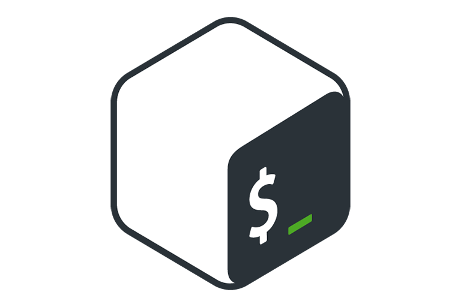

__Hola, soy Melanie!
Mis Stacks
En este espacio te presento las herramientas y lenguajes que he aprendido y cómo los aplico en mis proyectos personales y académicos.
MySQL
 Es un sistema de gestión de bases de datos relacionales que utilizo para almacenar, organizar y consultar datos en mis proyectos.
Es un sistema de gestión de bases de datos relacionales que utilizo para almacenar, organizar y consultar datos en mis proyectos.
Java
 Lenguaje de programación orientado a objetos que me ha ayudado a entender la lógica de la programación y a construir aplicaciones robustas.
Lenguaje de programación orientado a objetos que me ha ayudado a entender la lógica de la programación y a construir aplicaciones robustas.
HTML
 Lenguaje de marcado que utilizo para estructurar contenido en la web.
Lenguaje de marcado que utilizo para estructurar contenido en la web.
CSS
 Herramienta que me permite darle estilo y diseño a las páginas web para hacerlas más atractivas visualmente.
Herramienta que me permite darle estilo y diseño a las páginas web para hacerlas más atractivas visualmente.
bash

Lenguaje de scripting que utilizo para automatizar tareas dentro de sistemas operativos Linux
Excalidraw
Herramienta de dibujo que me ayuda a crear diagramas, bocetos y mapas conceptuales para representar ideas de manera visual.
Notion
 es una herramienta versátil que funciona como un espacio de trabajo todo en uno, permitiendo organizar notas, tareas, proyectos, en un solo lugar.
es una herramienta versátil que funciona como un espacio de trabajo todo en uno, permitiendo organizar notas, tareas, proyectos, en un solo lugar.
GitHub
 se utiliza principalmente para el control de versiones y la colaboración en proyectos de desarrollo de software.
se utiliza principalmente para el control de versiones y la colaboración en proyectos de desarrollo de software.
VsCode
editor de código fuente ligero y potente, gratuito y de código abierto, que se utiliza para escribir, editar, depurar y administrar código de diferentes lenguajes de programación.